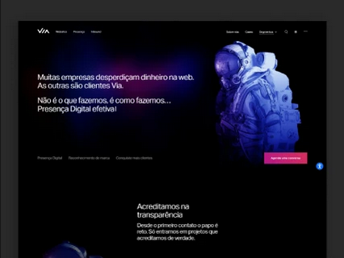

Ele sinaliza para os visitantes e clientes o compromisso do site com a redução da pegada de carbono digital. Este selo é um símbolo de excelência e liderança no movimento por uma internet mais verde.
Junte-se ao movimento por uma Internet Mais Verde
Coloque a URL do seu site no campo abaixo e verifique se ele é um website sustentável:
Versão 1.1, atualizado em 09/01/2024
Esta iniciativa pioneira busca reconhecer e incentivar práticas de web ecologicamente corretas, servindo como uma orientação para mudanças positivas na indústria digital.
Por que uma Internet Sustentável é Crucial?

Consumo elevado de energia no mundo
A internet consome cerca de 416.2 TWh por ano, mais do que o consumo total de energia do Reino Unido, enfatizando a necessidade urgente de práticas web mais eficientes em termos energéticos.

Emissões de carbono comparáveis à aviação
O uso global de dados está crescendo exponencialmente, com um aumento previsto de 61% entre 2018 e 2022, tornando essencial a otimização de websites para menor impacto ambiental.
Crescimento rápido no consumo de dados
O uso global de dados está crescendo exponencialmente, com um aumento previsto de 61% entre 2018 e 2022, tornando essencial a otimização de websites para menor impacto ambiental.
Responsabilidade social
Práticas de design sustentável podem reduzir significativamente a pegada de carbono dos sites. Por exemplo, otimizações simples podem diminuir o consumo de energia de um site em até 72%.
O Selo Website Sustentável é um reconhecimento para sites que demonstram práticas exemplares de sustentabilidade.

Como seu site pode se tornar sustentável?
1.
Adote práticas sustentáveis de design e desenvolvimento baseadas nos princípios do Manifesto Web Sustentável.
2.
Utilize nossa ferramenta para verificar a sustentabilidade do seu site.
3.
Informe que o seu site é sustentável:Após a validação, você poderá baixar o Selo Website Sustentável e colocar em seu site.
Sites belíssimos, profissionais e sustentáveiss

Opera Multimídia
Apenas 0,06g de CO²

Via Agência Digital
Apenas 0,14g de CO²

Doc Soluções
Apenas 0,19g de CO²

Prisma Is Cool
Apenas 0,22g de CO²
Speedtask
Apenas 0,23g de CO²

Wis Digital
Apenas 0,32g de CO²
Em média, uma página web produz cerca de 0,8 gramas de CO² equivalente por visualização. Para um site que recebe 10.000 visualizações por mês, isso representa um total de 102 kg de CO² equivalente anualmente.